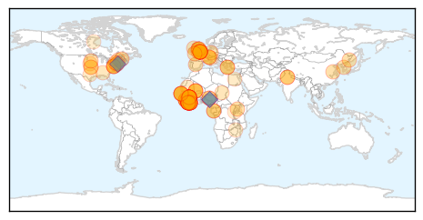

30 Day Trends
Web: 0 alerts, 0 warnings
Twitter: 2 alerts, 0 warnings
Top Articles:
- 1.000
- Ebola virus: Second military health care worker flown back following needle accident with patient
- 1.000
- Nigerian Writer Turns The Tables On Ebola-Fearing America, Suggests Africa Screen Americans For Measles
- 1.000
- Second British Health Care Worker Moved to UK for Ebola Assessment
- 1.000
- Ebola virus death toll in West Africa nearing 9,000 — WHO
- 0.999
- Human Trials for Two New Ebola Vaccines Just Began in Liberia
- 0.999
- Ebola vaccines testing starts in Liberia in partnership between Liberian and US governments
- 0.999
- The world is closer to having a real weapon to fight Ebola
- 0.999
- Ebola vaccine trial gets under way
- 0.999
- Unhappy doctors; predict your next ER visit
- 0.999
- New Ebola scare as second military healthcare worker is flown back to England
- 0.999
- Worst Ebola outbreak in history: What you need to know
- 0.999
- Volunteers start getting Ebola vaccine in Liberia
- 0.999
- Senegal Puts 20 People on Watch for Ebola After First Case
- 0.999
- Tests Confirm Hospitalized Russian Aid Worker Not Infected With Ebola
- 0.999
- First Major Vaccine Trials In Liberia
- 0.998
- Liberia begins clinical trial for Ebola vaccines as outbreak ebbs
- 0.998
- CDC recommends looser Ebola monitoring than state quarantines for health workers
- 0.998
- Second healthcare worker brought back to England to be monitored for Ebola
- 0.998
- Ebola vaccine trial launches in Liberia
- 0.998
- The Courier Ebola vaccines trial starts in Liberia
- 0.998
- Liberia to Begin First Mass Trial of Preventive Ebola Vaccine
- 0.998
- Ebola Vaccine Trials Begin in Liberia
- 0.997
- Liberia begins clinical trial for Ebola vaccines as outbreak ebbs
- 0.997
- Liberia begins clinical trial for Ebola vaccines
- 0.997
- Liberia begins clinical trial for Ebola vaccines as outbreak ebbs
- 0.996
- Ebola vaccine trials to be carried out in Uganda
- 0.996
- Liberia Schools postponed for 2 weeks more -
- 0.996
- Liberia begins clinical trial for Ebola vaccines as outbreak ebbs
- 0.995
- Peter Penfold: Rebuilding Sierra Leone after Ebola
- 0.994
- Ebola victim still not free of virus
- 0.994
- Ebola fight enters new phase with vaccine trials in Africa (+video)
- 0.994
- Anti-Ebola vaccine trials to begin in Liberia
- 0.993
- Nurse is flown to UK in Ebola scare
- 0.992
- Malaria: The other epidemic in Sierra Leone
- 0.992
- First large-scale anit-ebola vaccine trials to begin
- 0.990
- Ebola Vaccines Trial Begins in Liberia
- 0.990
- Ebola Vaccines Trial Begins in Liberia
- 0.990
- Ebola Vaccines Trial Begins in Liberia
- 0.989
- Ebola crisis: Liberia bounces back
- 0.988
- African Union criticized Over Poor Record in the Early Stages of Ebola Epidemic
- 0.988
- Ebola Virus Remedy: Faces of Liberia’s Vaccine Trials
- 0.988
- Updated Information Re: Potential Implications for Travel Because of Ebola in Parts of West Africa, Feb. 2, 2015
- 0.987
- 'Ebola vaccine is safe'
- 0.987
- UK military experts warn of ‘weaponized Ebola’ – report — RT UK
- 0.986
- Ebola vaccine trial on volunteers begins in Liberia
- 0.986
- Ebola vaccine trial begins in secret location in Liberia
- 0.986
- Ebola vaccines testing starts in Liberia
- 0.985
- Ebola vaccines testing starts in Liberia in partnership between Liberian and US governments
- 0.985
- Ebola vaccines testing starts in Liberia
- 0.985
- Ebola crisis: First large-scale vaccine trials to begin
Showing top 50 articles...
Top Tweets:
- 0.998
- Ebola Virus Disease also known as EVD is a deadly illness caused by the Ebola Virus
- 0.893
- Ebola takes a toll on West Africa's surgeons as 800 health care personnel have been infected w/ virus http://t.co/MUQd7sg5fQ
- 0.891
- The Ebola Virus is then transmitted to other humans by human-to-human transmission through bodily fluids & infected surfaces
- 0.763
- Rachelle was a senior staff nurse at the Royal London Hospital when she heard about the Ebola outbreak. via EbolaStory
- 0.758
- RT: Ebola survivors are playing a huge role in stopping the spread of the disease. Read Mariatu's story http://t.co/eP7CfG1bCs Eb…
- 0.595
- UK has flown home a healthcare worker who may have been exposed to Ebola in SL. 2nd such case in several days both needlestick events 1/2
- 0.541
- Ebola virus epidemic: global picture and impact on children unicef http://t.co/E9xG7dds5e
- 0.525
- RT: SierraLeone recorded 68 new confirmed Ebola cases last week. That would have been a daily average in November.... http:/…
- 0.517
- RT: Preparedness is an expensive business. @Eboladeeply asks if Guinea-Bissau could deal with an Ebola outbreak. http://t…
Web/News Articles

Tweets

Article Locations
Article Confidences